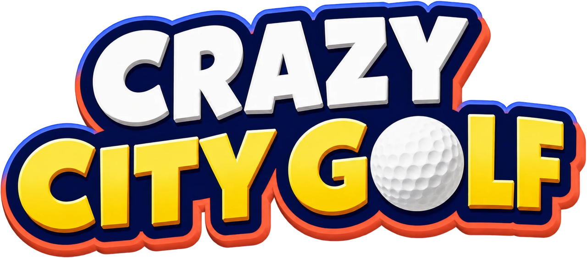
街まるごとがゴルフコース。道順は自由、事故はごちそう。最大8人が同じ街を同時に駆け回る、オンライン・パーティアクションゴルフ。
The whole city is the course. Take any route you like — the accidents are the best part. An online party golf game for up to 8 players, all teeing off at once.
約100秒。テロップと映像内の UI は英語表示です。
About 100 seconds. On-screen captions and UI are in English.
『Crazy City Golf』は、街まるごとをゴルフコースにした、PC 向けのオンライン・パーティアクションゴルフです。招待したフレンドと同じ街に立ち、全員が同時にゴールを目指します。
道順は自由です。スタートとゴールは全員共通ですが、そこまでの道はひとつではありません。道路を素直に刻むか、路地を抜けるか、ビルの屋上を渡るか。川も線路も、境界にも近道にもなります。街はラウンドごとに丸ごと自動生成され、ラウンドの間は変わりません。ホールを重ねるほど「あの屋根に乗れば近い」という知識が増えていきます。
事故はごちそうです。走る車にはね飛ばされ、ドラム缶は爆発し、消火栓は水柱を上げます。思いどおりにならない物理の事故は、損にもなれば、誰も思いつかなかった近道にもなります。順番待ちはありません。最大8人の球が同じ街を同時に飛び交い、失敗も逆転も、その場の全員の笑いになります。
アイテムは打球の法則を変えます。壁に張り付いてビルを登る粘着、建物をすり抜けるゴースト、ひと打ちを無かったことにする巻き戻し。自分に掛けるか、自分以外の全員に掛けるかを選べます。隕石・竜巻・雷・UFO のように、街そのものに出来事を起こすアイテムもあります。
ひとりのときは CPU を最大7人まで入れて遊べます。1ホールは数分、1ラウンドは10〜20分ほどです。
| タイトル | Crazy City Golf |
|---|---|
| ジャンル | オンライン・パーティアクションゴルフ |
| プラットフォーム | PC（Windows / Steam） |
| プレイ人数 | 1〜8人（オンライン。ひとりのときは CPU と対戦） |
| 対応言語 | 日本語、英語 |
| 発売時期 | 未定 |
| 価格 | 未定 |
| 開発 | Nulpoyo（2人のインディーチーム） |
| Steam | store.steampowered.com/app/5347600/ |
Nulpoyo（ぬるぽよ）。会社の同期2人によるインディー開発チームです。日本の会社員2人が、本業のかたわら、二人でゲームを制作しています。
《開発者からのひとこと。なぜ作ったか、どこに力を入れたか、どう遊んでほしいか》
Crazy City Golf is an online party golf game for PC where the whole city is the course. You and the friends you invite stand in the same city and all play for the same hole at once.
Take any route you like. Everyone shares the same tee and the same cup, but there is never just one way between them. Grind it out down the street, slip through an alley, or hop across the rooftops. Rivers and railways are both hazards and shortcuts. Each round generates a whole new city, and it stays put for the round — so with every hole you learn a little more about which roof gets you there faster.
The accidents are the best part. Passing cars send your ball flying, oil drums explode, fire hydrants blast it skyward. Physics you can't quite control can cost you a stroke — or open a shortcut nobody saw coming. There are no turns: up to 8 balls fly through the same city at the same time, and every blunder and comeback happens in front of everyone.
Items rewrite the rules of the shot. Sticky lets you climb a building wall, Ghost passes straight through it, Rewind takes a shot back. Use them on yourself, or on everyone else. Some items set off events in the city itself: meteors, tornadoes, lightning and UFOs.
Playing alone? Fill the round with up to 7 CPU golfers. A hole takes a few minutes; a full round runs about 10 to 20.
| Title | Crazy City Golf |
|---|---|
| Genre | Online party action golf |
| Platform | PC (Windows / Steam) |
| Players | 1–8 (online; solo play against CPU golfers) |
| Languages | English, Japanese |
| Release | TBA |
| Price | TBA |
| Developer | Nulpoyo (two-person indie team) |
| Steam | store.steampowered.com/app/5347600/ |
Nulpoyo is a two-person indie team from Japan: two colleagues who joined the same company in the same year, making games together alongside their full-time office jobs.
《A few lines from the developer》
Steam ストアページと同じ9枚です。画面の UI は英語表示です。いま置いているのは 800×450 の JPEG です。記事に大きく載せる場合は、原寸（1920×1080）をお送りしますのでご連絡ください。
The same nine shots as on the Steam page, with the UI in English. These are 800×450 JPEGs for now — email us if you need full-size 1920×1080 originals.
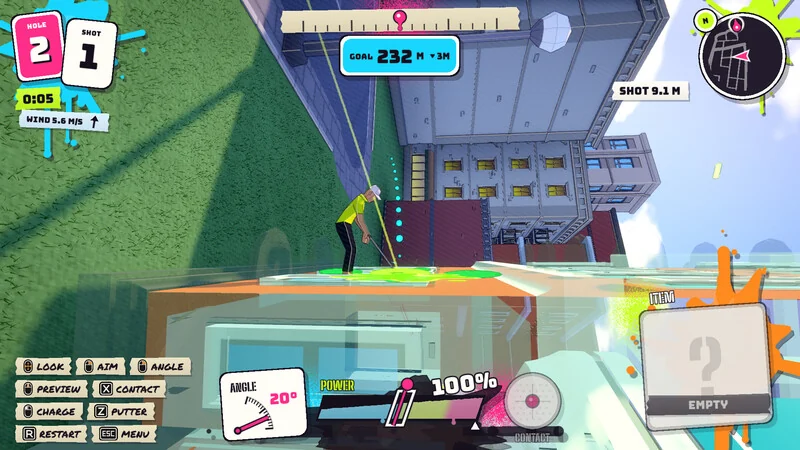
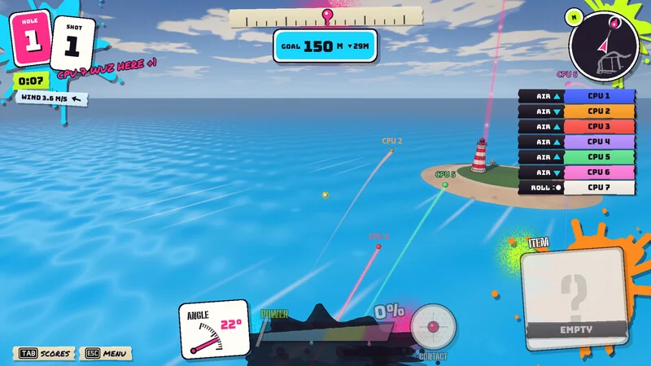
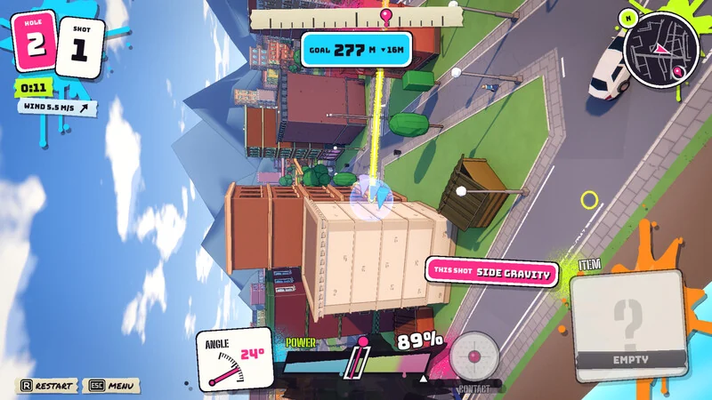
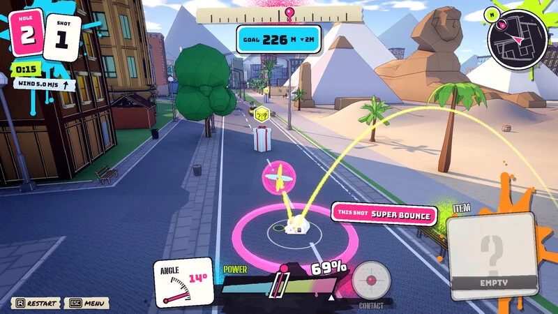
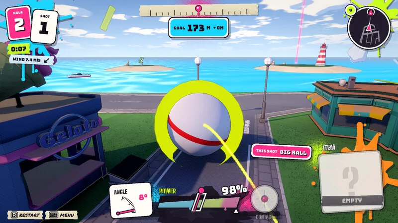
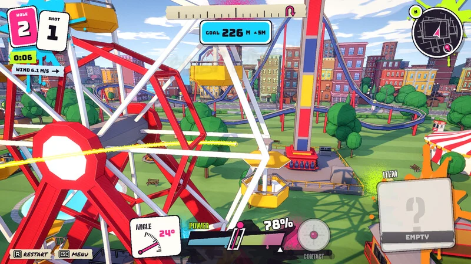
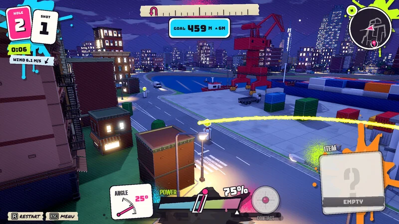
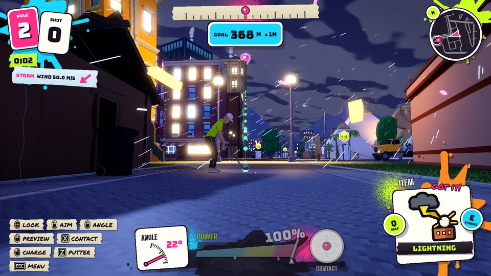
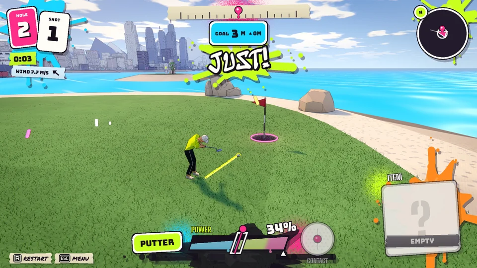
記事や投稿にそのままお使いいただけます。ページ上では軽い mp4 で再生しています。GIF（616×346）と mp4 のどちらもダウンロードできます。画面の UI は英語表示です。
Free to embed as-is. The page plays lightweight mp4 versions; both the GIF (616×346) and the mp4 are available to download. The UI shown is in English.
Steam 用に書き出した原寸です。ロゴは背景が透過した PNG。ロゴなしのキーアートも置いています。クリックで原寸が開きます。
Originals as exported for Steam. The logo is a PNG with a transparent background; key art without the logo is included too. Click for the full-size file.
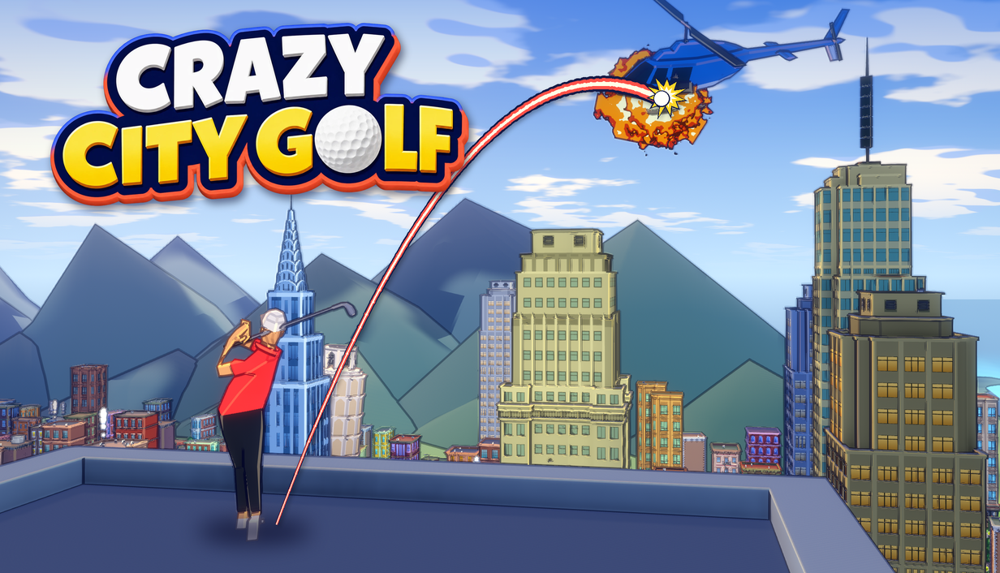
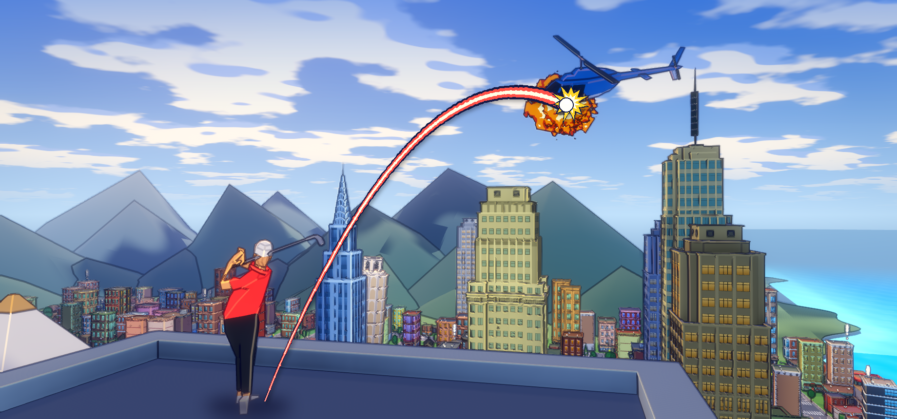
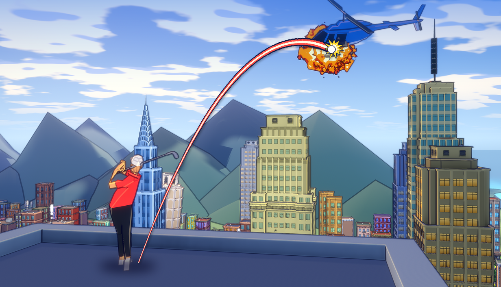
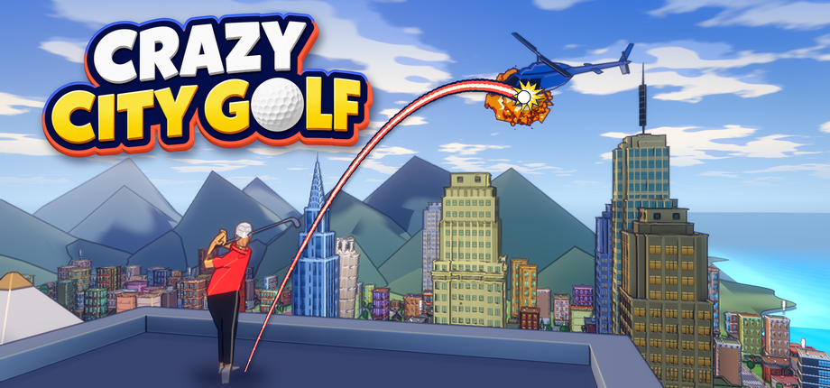
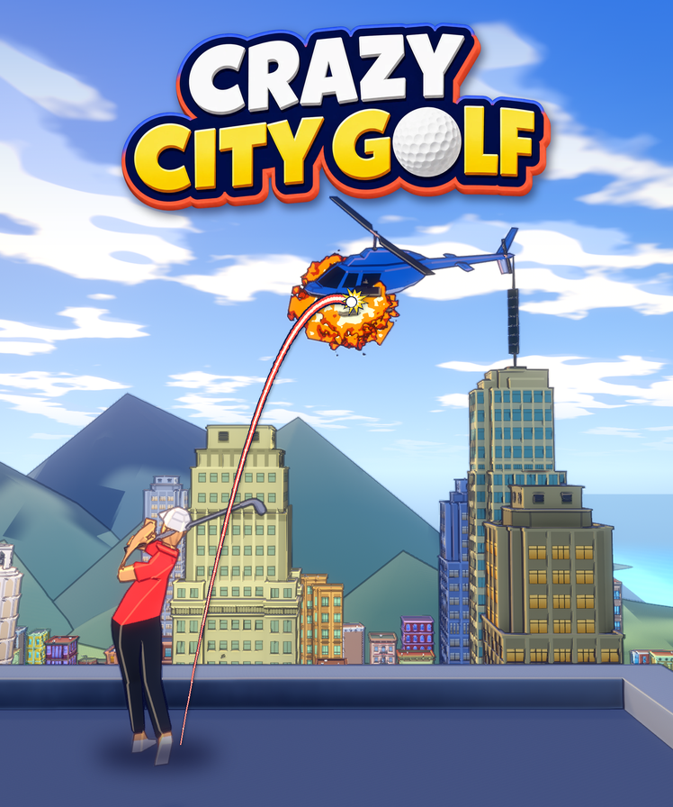
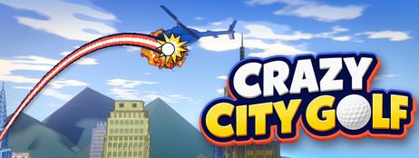
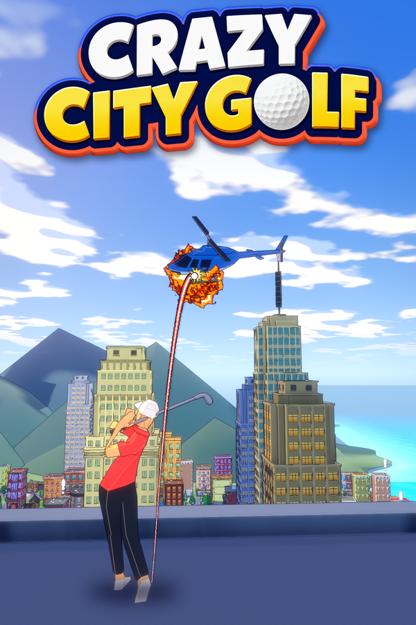
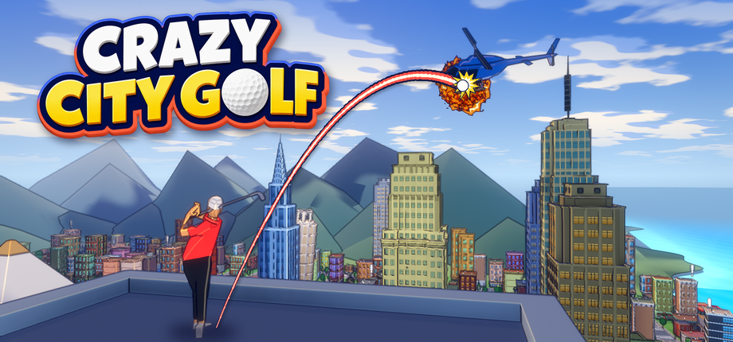
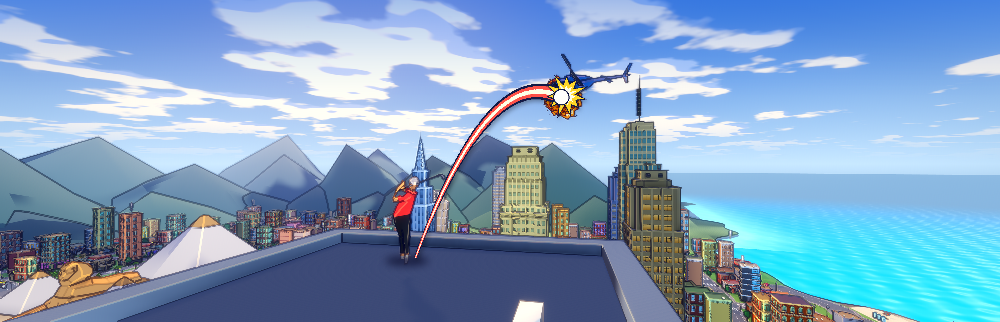
zip にはスクリーンショット9枚、GIF とループ動画（mp4、無音）各9点、ロゴとキーアートを含むブランド素材10点、ファクトシート（日英）が入っています。トレーラーは別にダウンロードしてください。
The zip contains 9 screenshots, 9 GIFs and 9 silent loops (mp4), 10 branding files including the logo and key art, and both fact sheets. The trailer is a separate download.
本プレスキットに含まれる画像・動画・テキストは、記事・動画・配信でのご使用が自由です。実況・収益化を含む配信も許可しています。事前・事後のご連絡は不要です。特定の場面のキャプチャや追加の素材が必要でしたら、お気軽にお申し付けください。
All assets in this press kit are free to use in articles, videos and streams, including monetized content. No permission or notification needed. If you need a specific scene captured or a different asset, just ask.
| 開発 | Nulpoyo（2人のインディーチーム） |
|---|---|
| メール | xz585a@gmail.com |
| Steam | store.steampowered.com/app/5347600/ |
| Developer | Nulpoyo (two-person indie team) |
|---|---|
| xz585a@gmail.com | |
| Steam | store.steampowered.com/app/5347600/ |